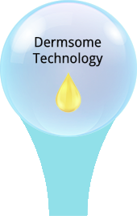
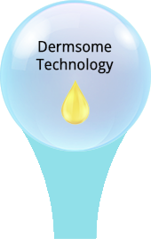

vs.
Semen

FaceSemen vs. Semen
| Semen | FaceSemen | |
| PH | 7.7* | 7.2 |
| Ion |

|
|
| Citrate |
|
|
| Saccharide |
|
|
| Protein |
|
|
| Sperm |
|
|
| Bioactive** |
|
|
| Appearance |
Translucent white |
Translucent white |
**Skin bioactives not found in semen.
A Semen facial may be a myth,
 is definitely not one.
is definitely not one.
Semen
The scientific mission to reveal the composition of semen can be dated back to the 16th century. We now know that semen is a unique fluid that not only carries the magic sperm, but also many other chemical substances. Citrate, Ions (Ca, Cl, K, Mg, Na, Zn), saccharides (carbohydrates) and proteins are the most essential and abundant substances of semen fluid.
FaceSemen
Citrate, ions, saccharides, proteins and others are meticulously used to create a unique nourishing fluid for visibly healthy, smooth, even and glowing skin.
No sperm is found in FaceSemen, but multiple skin bioactives such as Brightum, Dermsome or other age-defying technologies which have been scientifically proven to revive, revitalize and rejuvenate skin.
5 Chemistry Facts About FaceSemen
FaceSemen is a bold, creative and potent youth-boosting potion that is crystalized by the decades of scientific expertise and the never-ending quest for the most coveted innovation. Ingredients are meticulously selected, referencing semen, combining all to achieve an ageless harmony. It delivers an exquisite and sensational experience that is fully indulgent with potency.

Ion
Semen
Calcium (Ca), magnesium (Mg), potassium (K), sodium (Na) and Zinc (Zn) are the most abundant ions of semen fluid. These ions are critical elements that constitute the buffering environment for sperm motility and fertilization.
FaceSemen
Ions are unique components of FaceSemen. Ca, Mg, K, Na, Zn and many other minerals and trace elements are retrieved from sea salt or deep sea water. They serve as a natural conditioning that exfoliates and revitalizes skin.
minerals
Na
K
Mg
Ca
Zn
Semen
FaceSemen
Citrate
Semen
Citrate exists in a variety of fruits and vegetables such as limes and blackberries. Citrate is also abundant in semen. It is a critical buffer component of semen fluid.
FaceSemen
Citrate is a unique component of FaceSemen. Citric acid or citrate salt is integrated to banlance the pH (a scale of acidity) of FaceSemen. Moreover, citrate promotes skin exfoliation and skin cell turnover.
Citric
Acid
Sodium
Citrate
Potassium
Citrate
Semen
FaceSemen
Saccharide
Semen
Saccharides are carbohydrates that include glucose, fructose and many others. Glucose and fructose are the most abundant saccharides found in semen fluid. They are pivotal energy sources for sperms.
FaceSemen
Natural moisturizing factors (NMFs) are naturally present on the skin that allow the skin to remain moisturized. Glucose and fructose are NMFs. They are critical components of FaceSemen to retain the skin’s water hemostasis for a healthier skin.
glucose
fructose
Semen
FaceSemen
Protein
Semen
Protein is a major component of semen fluid. It is uncertain, however, what exact proteins exist within the semen fluid. Scientific studies suggest that proteins, all together maintains the fertility of sperm.
FaceSemen
Various selected proteins are found in the FaceSemen. They are superior hydrating factors that not only moisturize the skin but also works with other ingredients to create a unique hydrating barrier for skin.
collagen
elastin
whey
protein
others
Semen
FaceSemen
Unique Skin
Bioactive
Semen
Semen contains many bioactives critical for maintaining sperm function. Whether these substances are also beneficial for skin remain to be elucidated. Whether a semen facial benefit skin is still a myth without compelling scientific evidence.
FaceSemen
Varieties of bioactives are found in the FaceSemen. These are the unique bioactive molecules that unleash the ultimate resilient power of FaceSemen. Their potencies and efficacies to revive, revitalize and rejuvenate skin have been scientifically proven. R&D is ongoing, more to come in the future.
BrightumTM
Technology
DermsomeTM
Technology
All-in-one
age-defying
solution
Super
skin calming
complex
Semen
FaceSemen
The Future,
The Contineous Improvement.
What exactly constitutes semen fluid is yet to be elucidated. Scientific mission to understand components of semen continues. Hence, FaceSemen is continuously enhanced and improved.
New age-defying semen ingradients will be selectively added, accordingly to our increased understanding of semen composition.
Contineous R&D will lead to the discovery of better bioactives, added in, to boost the youth miracle of FaceSemen.
Ion
Citrate
Bioactive
Saccharide
Protein
More
 



FaceSemen product described on this website are intended to meet the FDA's definition of a
cosmetic
product, an article applied to the human body to cleanse, beautify, promote attractiveness, and
alter
appearances.
This product is not intended to be drug products that diagnose, treat, cure, or prevent any
disease
or
condition.
These products have not been approved by the FDA and the statements on these pages have not
been
evaluated by the FDA.
*Brightum represent thy hydropolytic oligo-sacchaires, the 1 core ingredient of Brightum
Technology
**Brightum represent the highly sulfated oligo-sacchaires the 2 core ingredient of Brightum
Technology
***Brightum represent the HMW fuccoidan the 3 core ingredient of Brightum Technology